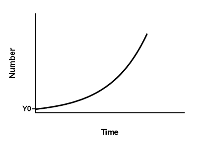

在“内卷”这个词还没被发明的日子里，仿佛遍地是黄金，人们忙着捡地上的钱，哪怕是被踹了一脚也不会抬头，或许只会说一句“不要妨碍我捡钱”。
同龄人竞争的残酷，或许根本不是在于繁重的工作压力，亦或是复杂的人际关系，而是在于以马太效应为底层逻辑的不可跨越性。
《新约圣经·马太福音》里面说道：“凡有的，还要加给他，叫他有馀；凡没有的，连他所有的也要夺去。”
对应到数学里面的概念，便是指数函数，在函数拐点发生之后，收益积累速度急剧攀升，所有的资源都会往一个人身上倾斜。
指数函数恰如其分地诠释了职场竞争的逻辑。同龄人之间从同一个位置起步，一开始大家以相差甚微的速度成长，但是某一天，一个人一旦完成了原始积累，整个人的势能便会以指数函数的形式开始增长。当意识到同龄人跟自己有明显差距的时候，逆风翻盘的可能性几乎为零。
个人成长跟基金投资一样，是存在复利效应的，复利效应的神奇之处就在于随着时间的拉长，收益的成长率越来越高，并且只增不减。对应到个人成长，意味着到了一定阶段之后，个人的学习速度越来越快，学习收益也越来越高。这个时候，领先的人会开始摧城拔寨，快速聚集身边的一切资源，将同龄人远远甩开。这也是人类社会的基本形态。
意识到这个问题，没有别的办法，只能逼迫自己同样以指数级的速度来成长，此时若是有人从旁边踹了我们一脚，不但要反击，可能的话，还要把他包里的钱给抢过来，这仿佛是条唯一的出路，更是“内卷”带给职场人的困境。
唯有持续保持自己的竞争力，持续打造自己的壁垒，持续向陡峭的地方攀登，才能勉强“苟活于世”。但愿春天来临之际，仍然能对身边人骂道：“不要妨碍我捡钱”。